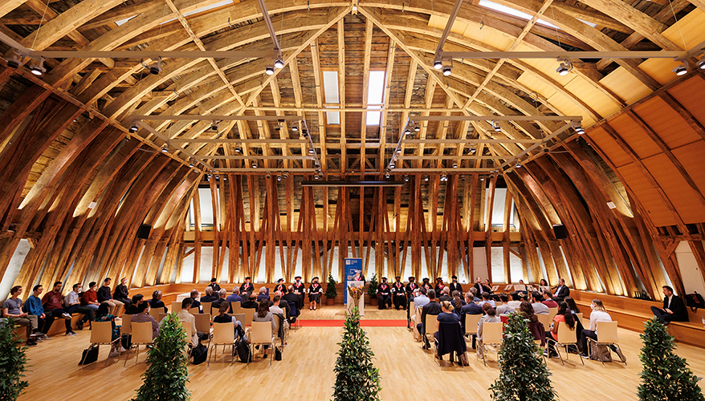
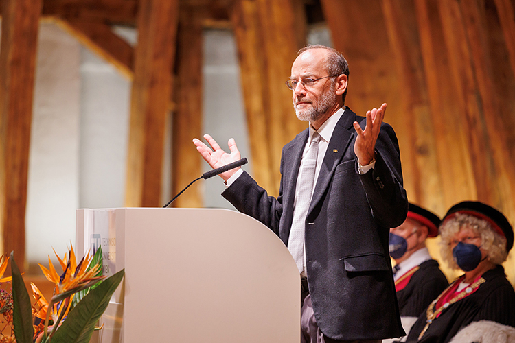
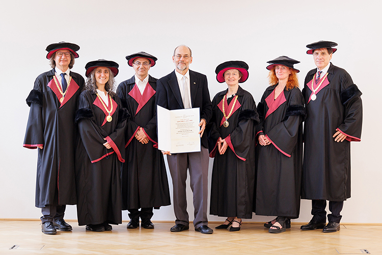
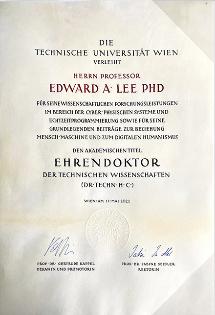

On May 17, 2022, Edward A. Lee received an honorary doctorate in Computer Science from the Technical University of Vienna at a ceremony in the main building on Karlsplatz:




Photos by Joseph Krpelan, May 17, 2022, in Vienna, Austria. All rights reserved.